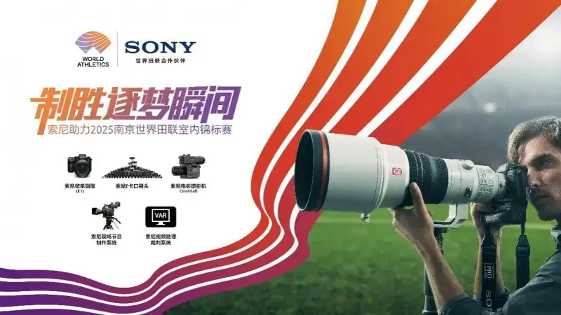
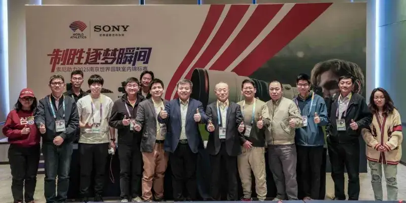
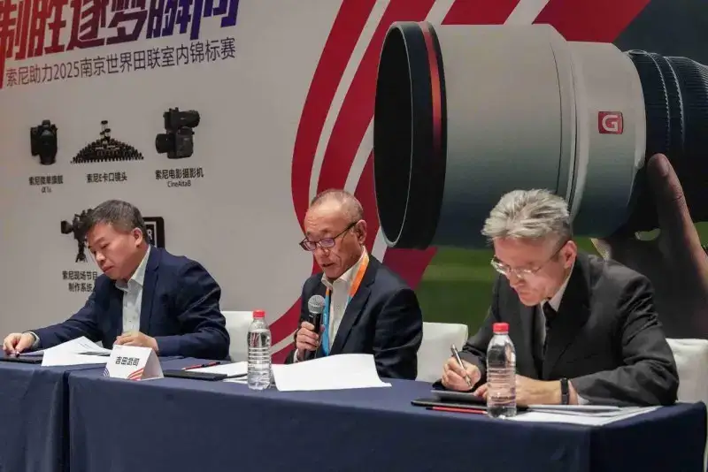
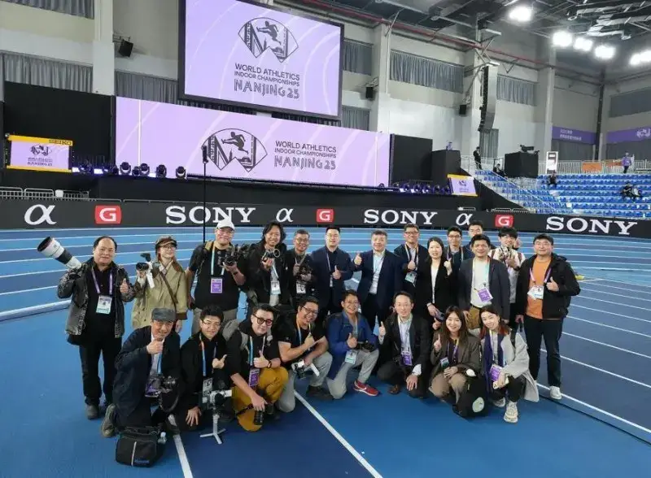
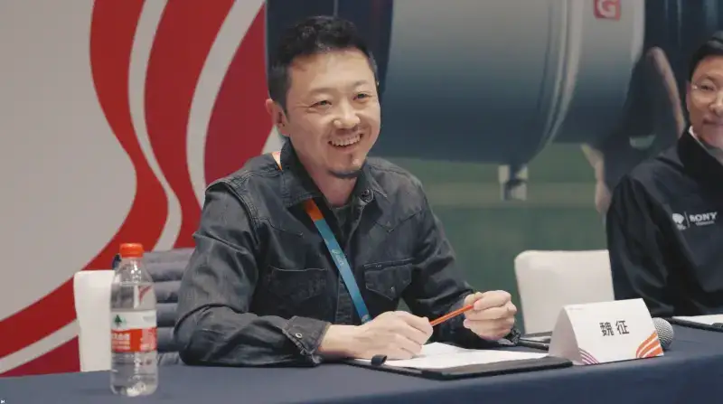

The 2025 Nanjing World Athletics Indoor Championships, or Nanjing World Championships for short, has come to a successful close. As the official technology partner of the event, Sony used its leading imaging technology to provide full support during the championships. This included live broadcast solutions, professional officiating technology, photography equipment, and professional imaging services. Sony helped the event deliver accurate broadcasts, ensured fair competition, and kept the equipment of photographers running steadily. It brought the thrilling moments of the championships to screens as if the viewers were on site, and gave audiences worldwide a visual feast.

Mission Guides Strategy: Sony Stands With CreatorsBuilding a Future of Creative Entertainment Together
Sony has always believed that the emotion sparked by competition is a language shared by all humanity. The desire to break through, the devotion to excellence, and the longing for strength are the ultimate human pursuit of self-transcendence. These aspirations take shape in the shot of a breakaway, the record at the finish line, the tears on the podium, and the cheers in the stands. They stir a shared emotion among the people on site and among the billions reached through photos and video. This resonance is also Sony's mission to spark and pass on emotion through technology. It is the emotional bond that links Sony deeply with creators and sports fans.

As one of the global leaders in technology innovation, Sony works under the mission of using the power of technology to build a future of entertainment together with creators. It keeps strengthening collaboration within the group and makes sport a part of its entertainment business. Guided by this vision, Sony has carried out a series of sponsorships and partnerships that support the development of sports events. It has built relationships with top global bodies such as World Athletics and World Aquatics. It also works with local event organizers and clubs to deepen the integration of technology and competition. Sony hopes to use its leading technology to empower sports events, and to record and present the remarkable achievements of athletes and their thrilling, dream-chasing moments of victory together with creators. It wants to pass on the passion and emotion of sport to fans around the world.
Takeshi Yoshida, President of Sony China, and Li Tun, Senior Director of the Imaging Solutions Marketing Department at Sony China Electronics Solutions, spoke to the media during the Nanjing World Championships. They shared Sony's strategic plan in sports entertainment. Mr. Yoshida noted that Sony is a creative entertainment company built on a solid technology base, and that using technology innovation to help creators realize their dreams is the company's long-held mission. He stressed that Sony's sponsorship of sports events is not just about showing a logo. It is about using advanced camera gear and imaging technology to fully support creators as they record the decisive moment and pass on a fleeting but moving emotion. Mr. Li Tun added that Sony will keep combining lightweight products with high performance, and keep improving its imaging ecosystem. The goal is higher image quality, faster burst shooting, and smarter focus in future products. This far-sighted approach and deep insight into the needs of creators keep Sony a leader in global sports entertainment technology.

Sony's support for the Nanjing World Championships is a clear expression of its global entertainment vision. During the event, Sony used advanced imaging technology to provide broadcast support, technical systems, and professional imaging equipment and services. Several broadcast vans fitted with HDC system cameras, and the flagship BRC-AM7 PTZ camera with AI tracking and smart framing, brought viewers worldwide a true and powerful view of the event. The video replay officiating system played a key role in ensuring fair and authoritative results. Sony Imaging Professional Services provided more than 100 flagship full-frame mirrorless cameras, such as the Alpha 1 II and Alpha 9 III, and over 200 G Master lenses for professional photographers to borrow on site. It also offered equipment cleaning, maintenance, and battery charging. All of this made an important contribution to shooting and broadcasting the event.
Innovative Technology Empowers:Sony Mirrorless Cameras“Five Great Advantages”Powering a New Breakthrough in Sports Photography
Sony keeps pushing sports photography forward through technology innovation. With leading full-frame cameras, a rich E-mount lens ecosystem, and smart imaging processing, it gives professional photographers powerful tools. At this event, the official camera and lens lineup, led by the Alpha 1 II and Alpha 9 III, shone on the field and became a trusted partner to photographers. It brought together the standout strengths of sports photography: high speed, high image quality, a wide lens lineup, light and compact bodies, and long battery life. These help photographers lock onto their target and win the dream-chasing moment.

Sports photographer Wei Zheng said in his sharing that Sony's full-frame mirrorless cameras and the newly released lenses greatly improved his efficiency and image quality. He described his real-world use of the FE 28-70mm F2 GM, the FE 16mm F1.8 G, and various fast primes such as the FE 35mm F1.4 GM, FE 85mm F1.4 GM II, and FE 135mm F1.8 GM. He especially praised the convenience of the Alpha 9 III's high-speed burst at about 120 frames per second and its pre-shooting feature. These make it far easier to catch fast-moving moments.

World-renowned sports photographer Bob Martin also shared his experience. He praised the light weight and strong optical performance of the new FE 400-800mm F6.3-8 G OSS super-telephoto zoom. He also spoke highly of the universal reach and stability of Sony's FTP transfer service. He noted that the advanced eye autofocus and silent shooting on Sony mirrorless cameras bring a new experience to sports photography. They let photographers catch the decisive moment without disturbing the event.
Yuri Karasaki, Director of Creator Support at Sony in Tokyo, also told the media that Sony is a creative entertainment company built on a solid technology base. It does more than provide leading imaging technology for events. Through ongoing innovation and cross-field partnerships, it pushes the deep integration of sports entertainment and digital sport. She stressed that Sony will keep listening to creators and professional photographers worldwide, and turn their valuable feedback into momentum for its next products. Mr. Li Tun also told the media that new products such as the FE 400-800mm F6.3-8 G OSS were tailored for the Chinese market after Sony listened to user needs and feedback. They precisely meet the high standards of professional users shooting wildlife, aviation, and sports events.
Sony links its leading imaging technology and full-service support together. Through constant breakthroughs in innovation, lightweight design, and user experience, it not only helps present sports events worldwide and leads sports photography into a new era. It lets audiences feel the passion of competition more truly and vividly. At the same time, it injects ongoing innovation into the sports photography industry and gives solid technical and service support for training the next generation of professional sports photographers. More importantly, through sports technology, it guides the industry toward standardization and digitalization, and pushes it into a new stage. Going forward, Sony will keep using technology to open a new era of fusion between sport and imaging, and carry the passion and emotion of sport to every corner of the world.